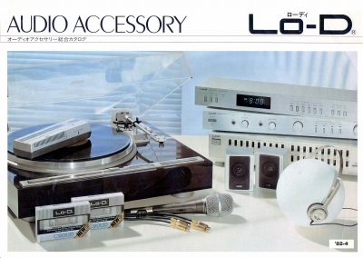
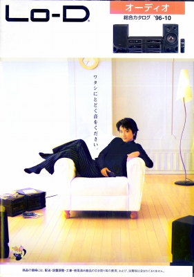

Lo-D カタログギャラリー
(カタログ画像をクリックすると原寸大のPDFファイルが開きます）
1982年4月アクセサリーカタログ

なお名称としての「Lo-D（ローディ）」は、日立のオーディオ撤退後もかなりの間、残った。
1996年10月版カタログ
ブランド名は「Lo-D（ローディ）」だが、実際の掲載商品は「日立」名義ばかりであり、「Lo-D」ブランドのものは、OEM調達のフォノイコライザーアンプ1機種のみである。

Lo-Dのインデックスへ